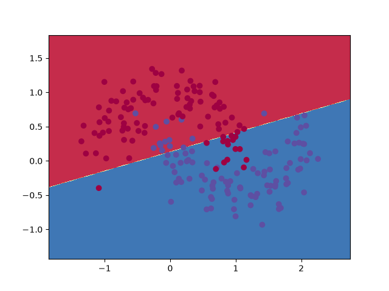

这篇教程在工程角度，从零开始实现一个简单的 3 层神经网络，不推导数学公式，仅作原理上和关键代码的解释。
需要注意的一点是，这里的代码不是非常高效。它们旨在易于理解。参考 Theano 编写高效的神经网络实现。
生成数据集
首先，生成一个可以使用的数据集。通过 make_moons 函数构建数据集。
1
2
3
4
5
# Generate a dataset and plot it
np.random.seed(0)
X, y = sklearn.datasets.make_moons(200, noise=0.20)
plt.scatter(X[:,0], X[:,1], s=40, c=y, cmap=plt.cm.Spectral)
plt.show()
生成的数据集有两个类别，分别用红色和蓝色点绘制。可以把蓝点看作男性患者，红点看作女性患者，x 轴和 y 轴是医学测量值。分类的目标是训练一个机器学习分类器，根据 x 和 y 坐标预测正确的类别（男性或女性）。请注意，数据不是线性可分的，即无法画一条直线将两个类别分开。这意味着线性分类器（如逻辑回归）无法拟合这些数据，除非手动设计适用于该数据集的非线性特征（如多项式）。这也是神经网络的主要优势之一，不需要担心特征工程。神经网络的隐藏层会为你学习特征。
逻辑回归
为了说明这一点，让我们训练一个逻辑回归分类器。它的输入是 x 和 y 值，输出是预测的类别（0 或 1）。为了方便，这里直接使用 scikit-learn 中的 LogisticRegression 类。
1
2
3
4
5
6
7
# 训练逻辑回归
clf = sklearn.linear_model.LogisticRegressionCV()
clf.fit(X, y)
# 边界绘制
plot_decision_boundary(lambda x: clf.predict(x))
plt.title("Logistic Regression")

图中显示了逻辑回归分类器学习到的决策边界。它用一条直线尽可能好地分隔数据，但无法切分两类数据。
训练一个神经网络
现在让我们构建一个 3 层神经网络，包含一个输入层、一个隐藏层和一个输出层。输入层的节点数由数据的维度决定，输出层的节点数由类别数决定，都取 2。
输出层的节点为什么选择2
这里因为例子中只有 2 个类别，实际上可以只用一个输出节点预测 0 或 1，但是单节点只能处理2分类问题，两个类别的概率分布只需一个自由度，对于多分类问题（比如分为N类），需要 N−1 个自由度，有一个约束是所有概率加起来为1。比如3分类需要3个概率，让单节点输出一个数，比如 \(s\in[0,2]\)，然后四舍五入成类别 0/1/2，那它做的是序数回归 或者 回归+取整，不是标准多分类：
- 它强行给类别加了顺序：0 < 1 < 2；
- 它认为类别 2 比类别 0 更“接近”类别 1；
- 输出不是概率，无法直接算交叉熵；
- 取整/argmax 不可微，不能直接反向传播；
- 训练目标会变成 MSE 回归，分类效果通常不好，也不符合类别无序的假设。
所以使用 2 个节点使得以后将网络扩展到更多类别更容易。
激活函数
网络的输入将是 x 和 y 坐标，输出将是两个概率，一个对应类别 0（“女性”），一个对应类别 1（“男性”）。它看起来大致是这样的：
我们可以选择隐藏层的维度（节点数）。隐藏层中的节点越多，能拟合的函数就越复杂。但更高的维度是有代价的。首先，进行预测和学习网络参数需要更多的计算。参数数量越多也意味着更容易对数据过拟合。
如何选择隐藏层的大小？虽然有一些通用指南和建议，但它总是取决于你的具体问题，更像是一门艺术而非科学。后面会尝试不同数量的隐藏层节点，看看它如何影响输出。
我们还需要为隐藏层选择一个激活函数。激活函数相关的比较资料可以参考这篇文章。这里使用 tanh，它在许多场景下表现良好。这些函数的一个良好特性是它们的导数可以用原始函数值来计算。例如，\(\tanh x\) 的导数是 $1-\tanh^2 x$。这个特性使得它可以计算一次 \(\tanh x\) 后，复用该值得到导数。
因为希望网络输出概率，所以输出层的激活函数使用 softmax，它将原始分数转换为概率的方法。softmax类似于逻辑函数（sigmoid）多类别的推广。
如何进行预测
网络使用前向传播进行预测，前向传播就是一堆矩阵乘法以及应用我们上面定义的激活函数。如果 $x$ 是网络的 2 维输入，那么我们如下计算预测（也是 2 维的）$\hat{y}$：
\[\begin{aligned} z_1 & = xW_1 + b_1 \\ a_1 & = \tanh(z_1) \\ z_2 & = a_1W_2 + b_2 \\ a_2 & = \hat{y} = \mathrm{softmax}(z_2) \end{aligned}\]$z_i$ 是第 $i$ 层的输入，$a_i$ 是第 $i$ 层应用激活函数后的输出。$W_1, b_1, W_2, b_2$ 是我们网络的参数，我们需要从训练数据中学习它们。你可以看到，如果我们增加隐藏层的大小，我们会有更多的参数。
学习参数
学习网络的参数意味着找到使训练数据上的误差最小化的参数（$W_1, b_1, W_2, b_2$）。但我们如何定义误差？我们称衡量误差的函数为损失函数。对于 softmax 输出，一个常见的选择是分类[交叉熵损失]（也称为负对数似然）。如果我们有 $N$ 个训练样本和 $C$ 个类别，那么我们的预测 $\hat{y}$ 相对于真实标签 $y$ 的损失为：
\[\begin{aligned} L(y,\hat{y}) = - \frac{1}{N} \sum_{n \in N} \sum_{i \in C} y_{n,i} \log\hat{y}_{n,i} \end{aligned}\]这个公式看起来很复杂，但它实际上所做的就是对我们所有的训练样本求和，如果我们预测了错误的类别，就增加损失。两个概率分布 $y$（正确标签）和 $\hat{y}$（我们的预测）相差越远，我们的损失就越大。通过找到使损失最小化的参数，我们最大化了训练数据的似然。
我们可以使用梯度下降来找到这个最小值。我们将实现最原始的梯度下降版本，也称为固定学习率的批量梯度下降。SGD（随机梯度下降）或小批量梯度下降等变体在实践中通常表现更好。所以如果你是认真的，你会想要使用其中之一，理想情况下你还会随时间衰减学习率。
作为输入，梯度下降需要损失函数相对于我们参数的梯度（导数向量）：$\frac{\partial{L}}{\partial{W_1}}$、$\frac{\partial{L}}{\partial{b_1}}$、$\frac{\partial{L}}{\partial{W_2}}$、$\frac{\partial{L}}{\partial{b_2}}$。为了计算这些梯度，我们使用著名的反向传播算法，这是一种从输出开始高效计算梯度的方法。我不会详细介绍反向传播的工作原理，但网上有许多优秀的解释（这里或这里）。
应用反向传播公式，我们得到以下结果（现在请先相信我）：
\[\begin{aligned} & \delta_3 = \hat{y} - y \\ & \delta_2 = (1 - \tanh^2 z_1) \circ \delta_3W_2^T \\ & \frac{\partial{L}}{\partial{W_2}} = a_1^T \delta_3 \\ & \frac{\partial{L}}{\partial{b_2}} = \delta_3 \\ & \frac{\partial{L}}{\partial{W_1}} = x^T \delta_2 \\ & \frac{\partial{L}}{\partial{b_1}} = \delta_2 \\ \end{aligned}\]实现
现在我们可以开始实现了。我们首先定义一些用于梯度下降的辅助变量。
1
2
3
4
5
6
7
num_examples = len(X) # training set size
nn_input_dim = 2 # input layer dimensionality
nn_output_dim = 2 # output layer dimensionality
# Gradient descent parameters (I picked these by hand)
epsilon = 0.01 # learning rate for gradient descent
reg_lambda = 0.01 # regularization strength
首先，让我们实现损失函数。我们用它来衡量模型的表现有多好。
1
2
3
4
5
6
7
8
9
10
11
12
13
14
15
# Helper function to evaluate the total loss on the dataset
def calculate_loss(model):
W1, b1, W2, b2 = model['W1'], model['b1'], model['W2'], model['b2']
# Forward propagation to calculate our predictions
z1 = X.dot(W1) + b1
a1 = np.tanh(z1)
z2 = a1.dot(W2) + b2
exp_scores = np.exp(z2)
probs = exp_scores / np.sum(exp_scores, axis=1, keepdims=True)
# Calculating the loss
corect_logprobs = -np.log(probs[range(num_examples), y])
data_loss = np.sum(corect_logprobs)
# Add regulatization term to loss (optional)
data_loss += reg_lambda/2 * (np.sum(np.square(W1)) + np.sum(np.square(W2)))
return 1./num_examples * data_loss
我们还实现一个辅助函数来计算网络的输出。它执行上面定义的前向传播，并返回概率最高的类别。
1
2
3
4
5
6
7
8
9
10
# Helper function to predict an output (0 or 1)
def predict(model, x):
W1, b1, W2, b2 = model['W1'], model['b1'], model['W2'], model['b2']
# Forward propagation
z1 = x.dot(W1) + b1
a1 = np.tanh(z1)
z2 = a1.dot(W2) + b2
exp_scores = np.exp(z2)
probs = exp_scores / np.sum(exp_scores, axis=1, keepdims=True)
return np.argmax(probs, axis=1)
最后，这是训练神经网络的函数。它使用我们上面找到的反向传播导数来实现批量梯度下降。
1
2
3
4
5
6
7
8
9
10
11
12
13
14
15
16
17
18
19
20
21
22
23
24
25
26
27
28
29
30
31
32
33
34
35
36
37
38
39
40
41
42
43
44
45
46
47
48
49
50
51
52
53
54
# This function learns parameters for the neural network and returns the model.
# - nn_hdim: Number of nodes in the hidden layer
# - num_passes: Number of passes through the training data for gradient descent
# - print_loss: If True, print the loss every 1000 iterations
def build_model(nn_hdim, num_passes=20000, print_loss=False):
# Initialize the parameters to random values. We need to learn these.
np.random.seed(0)
W1 = np.random.randn(nn_input_dim, nn_hdim) / np.sqrt(nn_input_dim)
b1 = np.zeros((1, nn_hdim))
W2 = np.random.randn(nn_hdim, nn_output_dim) / np.sqrt(nn_hdim)
b2 = np.zeros((1, nn_output_dim))
# This is what we return at the end
model = {}
# Gradient descent. For each batch...
for i in xrange(0, num_passes):
# Forward propagation
z1 = X.dot(W1) + b1
a1 = np.tanh(z1)
z2 = a1.dot(W2) + b2
exp_scores = np.exp(z2)
probs = exp_scores / np.sum(exp_scores, axis=1, keepdims=True)
# Backpropagation
delta3 = probs
delta3[range(num_examples), y] -= 1
dW2 = (a1.T).dot(delta3)
db2 = np.sum(delta3, axis=0, keepdims=True)
delta2 = delta3.dot(W2.T) * (1 - np.power(a1, 2))
dW1 = np.dot(X.T, delta2)
db1 = np.sum(delta2, axis=0)
# Add regularization terms (b1 and b2 don't have regularization terms)
dW2 += reg_lambda * W2
dW1 += reg_lambda * W1
# Gradient descent parameter update
W1 += -epsilon * dW1
b1 += -epsilon * db1
W2 += -epsilon * dW2
b2 += -epsilon * db2
# Assign new parameters to the model
model = { 'W1': W1, 'b1': b1, 'W2': W2, 'b2': b2}
# Optionally print the loss.
# This is expensive because it uses the whole dataset, so we don't want to do it too often.
if print_loss and i % 1000 == 0:
print "Loss after iteration %i: %f" %(i, calculate_loss(model))
return model
隐藏层大小的影响
1
2
3
# Plot the decision boundary
plot_decision_boundary(lambda x: predict(model, x))
plt.title("Decision Boundary for hidden layer size 3")
1
2
3
4
5
6
7
8
plt.figure(figsize=(16, 32))
hidden_layer_dimensions = [1, 2, 3, 4, 5, 20, 50]
for i, nn_hdim in enumerate(hidden_layer_dimensions):
plt.subplot(5, 2, i+1)
plt.title('Hidden Layer size %d' % nn_hdim)
model = build_model(nn_hdim)
plot_decision_boundary(lambda x: predict(model, x))
plt.show()
可以发现，低维度的隐藏层很好地捕捉了数据的总体趋势，高维度容易过拟合。它们是在“记忆”数据，而不是拟合总体形状。如果我们在单独的测试集上评估我们的模型（你应该这样做！），隐藏层较小的模型由于泛化能力更好，可能会表现更优。我们可以通过更强的正则化来对抗过拟合，但为隐藏层选择正确的大小是一种更经济的解决方案。
练习
以下是一些你可以尝试的事情，以更熟悉代码：
- 不使用批量梯度下降，而是使用小批量梯度下降（更多信息）来训练网络。小批量梯度下降在实践中通常表现更好。
- 我们为梯度下降使用了固定的学习率 $\epsilon$。为梯度下降学习率实现一个退火计划（更多信息）。
- 我们为隐藏层使用了 $\tanh$ 激活函数。尝试其他激活函数（上面提到了一些）。注意，改变激活函数也意味着改变反向传播导数。
- 将网络从两个类别扩展到三个类别。你需要为此生成一个合适的数据集。
- 将网络扩展到四层。尝试不同的层大小。添加另一个隐藏层意味着你需要调整前向传播和反向传播代码。
杂项
- 在Windows Python的安装维护界面中，确保勾选了 “tcl/tk and IDLE，否则plt无法绘图。
参考资料： IMPLEMENTING A NEURAL NETWORK FROM SCRATCH IN PYTHON – AN INTRODUCTION